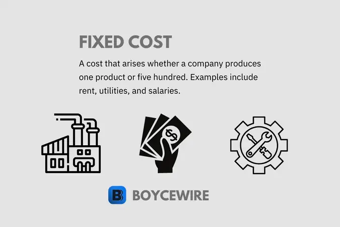
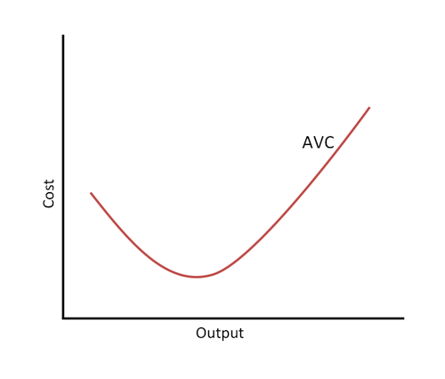
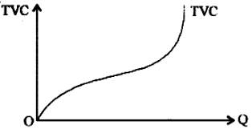

The theory of cost is a fundamental concept in economics that
analyzes the relationship between the production of goods and
services and the associated costs incurred by firms. It is a
crucial aspect of microeconomics and provides valuable insights
into a firm's decision-making process, pricing strategies, and
overall efficiency.
Key components of the theory of cost include:
1. Total Cost (TC):
Total cost represents the sum of all expenses incurred
by a firm to produce a specific quantity of output. It
comprises both explicit costs (direct, out-of-pocket
expenses like wages, raw materials, rent, etc.) and
implicit costs (opportunity costs, such as the value
of resources owned by the firm but not purchased, like
the owner's time).
2. Marginal Cost (MC): Marginal cost refers
to the change in total cost that occurs when producing
one additional unit of output. It is essential because
it helps firms decide the optimal level of production
that maximizes profits. If marginal cost is less than
the price of the product, producing more units can
increase profits.
3. Average Total Cost (ATC): Average total
cost is calculated by dividing the total cost by
the quantity of output produced. It represents the
cost per unit of output. ATC is crucial in determining
the firm's efficiency and profitability.
4. Fixed Costs (FC): Fixed costs are expenses
that do not vary with the level of output in the short
run. Examples include rent for the production facility
or salaries of management, which remain constant regardless
of the firm's production.
5.Variable Costs (VC): Variable costs change
in direct proportion to the level of output. Raw
materials and labor costs are typical examples of
variable costs. As production increases, variable
costs also increase.
5.Short-Run Costs vs. Long-Run Costs: In the
short run, some costs, like fixed costs, cannot be
changed quickly. In contrast, variable costs can be
adjusted based on production levels. In the long run,
all costs become variable, as the firm has the
flexibility to adjust its scale of operations.

The term "AFC curve" refers to the Average
Fixed Cost curve in economics. The Average Fixed
Cost (AFC) is the fixed cost per unit of output
produced by a company. It is calculated by dividing
the total fixed cost by the quantity of output.
The formula for Average Fixed Cost (AFC) is:
AFC = Total Fixed Cost / Quantity of Output
The Average Fixed Cost curve is typically U-shaped due
to the relationship between fixed costs and output. As
the quantity of output increases, the fixed cost per
unit decreases, leading to a downward-sloping curve.
 Avc Curve (Above)The term "AVC curve" refers to the Average Variable Cost curve in economics. The Average Variable Cost (AVC) is the variable cost per unit of output produced by a company. Variable costs are costs that vary with the level of production and include expenses such as raw materials, direct labor, and utilities.
The formula for Average Variable Cost (AVC) is:
AVC = Total Variable Cost / Quantity of Output
The Average Variable Cost curve is typically U-shaped
due to the relationship between variable costs and output.
Similar to the Average Fixed Cost (AFC) curve, the AVC
curve starts high at low levels of output and then
decreases as output increases. This is because, at
lower production levels, the fixed costs are spread
thinly over a small quantity of output, leading to
higher AVC. However, as production increases, the
fixed costs are distributed over more units, resulting
in a reduction in the AVC.
Relationship between ATC,AFC & AVCRelationships:
ATC and AFC:
ATC is the sum of AFC and AVC. Mathematically, the relationship
can be expressed as:
ATC = AFC + AVC
As output increases, AFC decreases, and AVC may also decrease (due to economies of scale). Consequently, ATC will decrease as well. However, if AVC starts increasing significantly at higher levels of output (due to diminishing returns), it can cause ATC to increase.
The relationship between ATC and AVC is similar to the relationship between ATC and AFC. ATC is the sum of AFC and AVC. As output increases, AVC may initially decrease, leading to a decrease in ATC (due to economies of scale). However, if AVC starts increasing significantly at higher levels of output, it can cause ATC to increase as well.

The TVC (Total Variable Cost) curve is a
graphical representation of the relationship between
the level of output (quantity produced) and the total
variable cost incurred by a firm. It is an essential
concept in the theory of cost and microeconomics.
The relationships between MC (Marginal Cost),
AVC (Average Variable Cost), AFC (Average Fixed Cost),
and ATC (Average Total Cost)
The theory of cost
is vital for firms to optimize their production
processes and maximize profitability. By
understanding cost structures and how they
change with varying levels of output, businesses
can make informed decisions about pricing,
resource allocation, and overall business
strategy. It also helps economists and
policymakers analyze market behavior,
competition, and the efficiency of resource
allocation within an economy.


 Relationship between ATC,AFC & AVC
Relationship between ATC,AFC & AVC